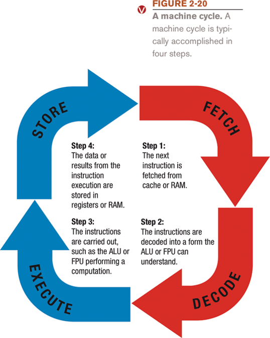
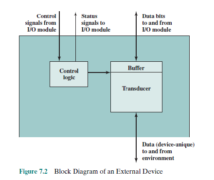

Computer Architecture
Machiene Cycle
☛ Four steps performed for each instruction.
➠ Machine cycle: the amount of time needed to execute an instruction.
➠ Personal computers execute in less than one millionth of a second.
➠ Supercomputers execute in less than one trillionth of a second.
☛ Each CPU has its own instruction set.

